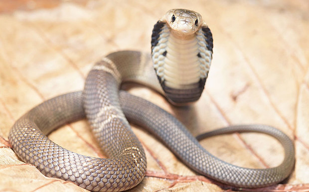
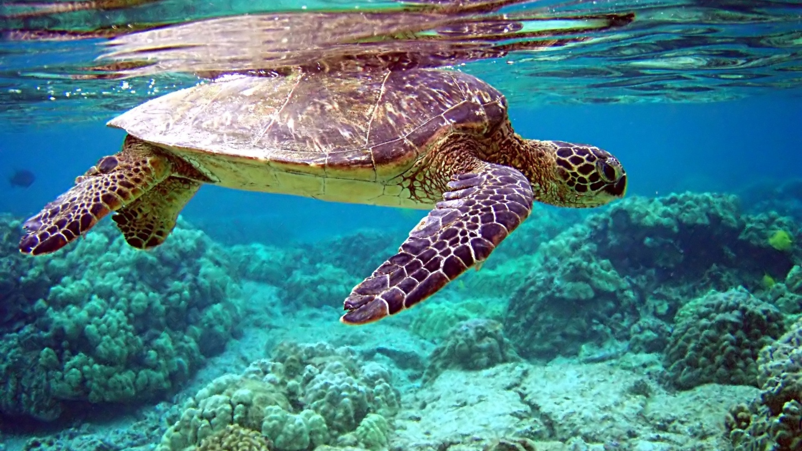
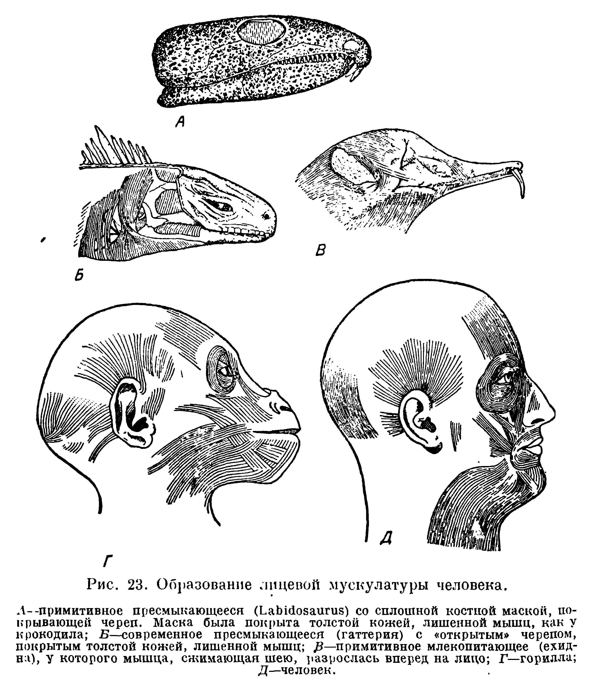
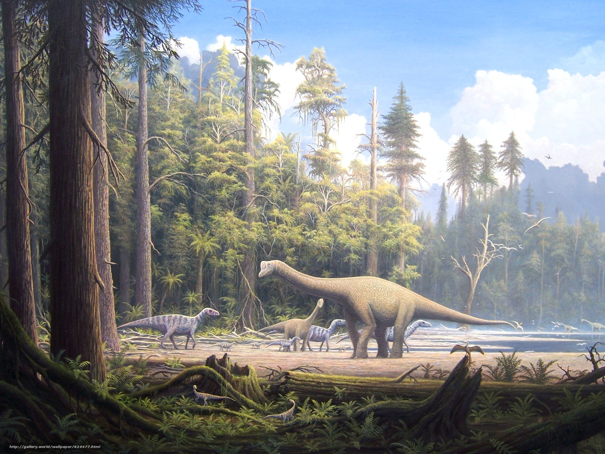

Рептилии
Собственной персоной:
Предисловие
Рептилии гибкие и ловкие, как этот сайт. А также они наши давние предки. Черепахи, крокодилы, ящерицы, змеи... Вот эти вот ребята.
Факты
- Источники: Виллиам К. Грегори "Эволюция лица от рыбы до человека"; ru.wikipedia.org
-
Факт 1: Большим событием был переход некоторых земноводных целиком к размножению на суше, ибо таким образом возникла следующая стадия развития — стадия пресмыкающиеся(или рептилии), а с нею и возможность развития всех высших форм жизни, в том числе и человека.
Факт 2: Важнейшие трудности, с которыми столкнулись звероподобные пресмыкающиеся, заключались в необходимости ускорения их жизненных процессов и удержания последних на сравнительно высоком уровне. Во времена крайне сурового и переменчивого климата необходимо было найти средства, для того чтобы облечь тело в "теплую одежду", ограждая его от холода, а также дать возможность телу охлаждаться при перегревании. Главную роль среди приспособлений для удержания тепла сыграли волосы, которые повидимому образовались из небольших осязательных выростов кожи. По мере погружения костной маски под поверхность появляются "лицевые мышцы".
Факт 3: Крупнейшие наземные животные принадлежали к динозаврам — представителям древних пресмыкающихся. Пресмыкающиеся пережили расцвет в эпоху мезозоя, когда они доминировали на земле, в море и в воздухе. В конце мелового периода большая часть пресмыкающихся вымерла. Современные рептилии — лишь разрозненные остатки того мира. Однако, древние рептилии дали начало двум процветающим в настоящее время группам животных — птицам и млекопитающим, причём многие приспособления, обусловившие эволюционный успех этих групп, появились еще у их предков, представлявших собой специализированные формы рептилий (дифференцированная зубная система, теплокровность, теплоизолирующие покровы тела — перья и шерсть, развитый головной мозг, и так далее).
 подробнее →
Постскриптум
asdsdasdasd asdasd